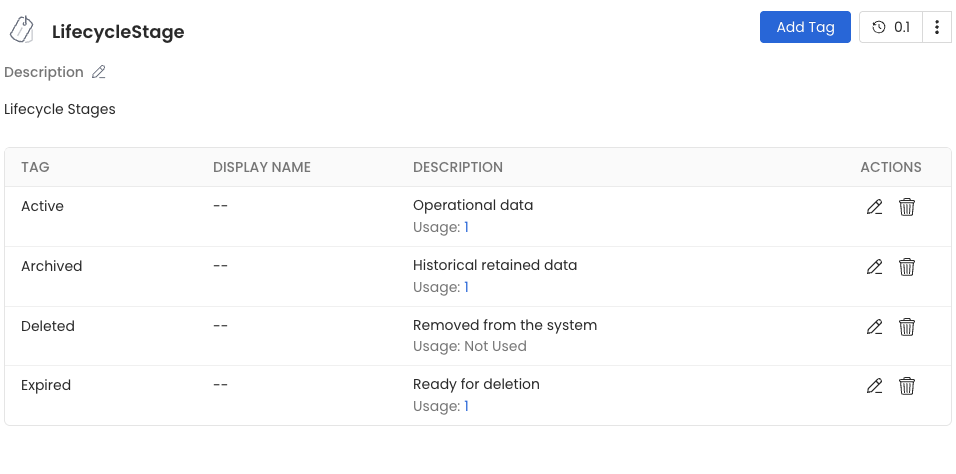
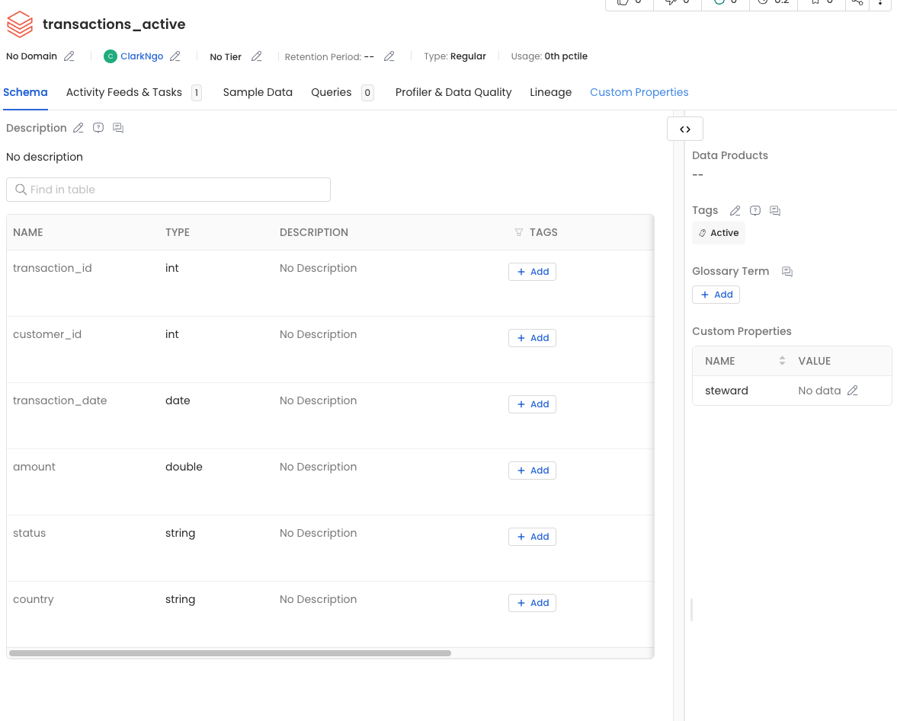
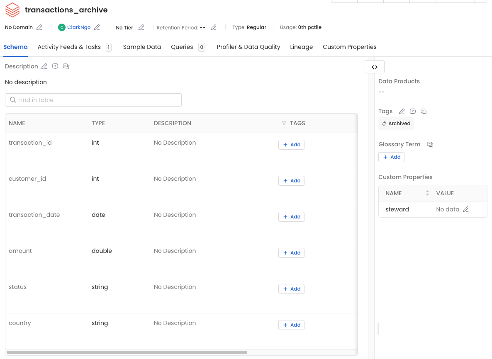
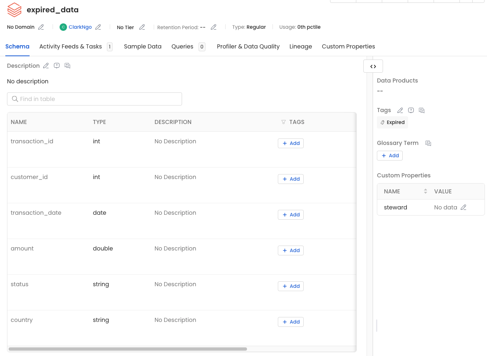

Data Lifecycle Management — FinBank Compliance Audit Case Study — Clark Ngo




| Table | LifecycleStage Tag | Justification |
|---|---|---|
transactions_active | Active | Transactions from the last 12 months — operationally live, used for reporting and fraud detection |
transactions_archive | Archived | Transactions older than 12 months, within 7-year retention window — read-only, cold storage |
transactions_delta | Active | Delta version-tracked subset of active data; supports audit time-travel queries |
expired_data | Expired | Rows older than 7 years — identified for deletion, pending approval workflow |
transactions_archive immediately knows it is read-only and not the live dataset. Tags reduce miscommunication between data engineers and business consumers at scale.
| Policy Area | Rule | Regulatory Basis | Proof Required |
|---|---|---|---|
| Archive Boundary | Transactions older than 365 days move from transactions_active to transactions_archive on each pipeline run |
Operational data governance standard — cold storage for records not needed in real-time queries | COUNT(*) verification — active + archive must equal total rows (500) |
| Deletion Rule | Transactions older than 7 years (2,555 days) are identified as expired and removed from all active and archive tables | Sarbanes-Oxley Act (SOX) Section 802 — 7-year retention for financial records; Dodd-Frank Wall Street Reform Act; GDPR Article 5(1)(e) data minimization | Print statement with expired count, retained count, timestamp, and policy name |
| Version Tracking | All data changes to transactions_delta must be logged with ACID transactions using Delta Lake. DESCRIBE HISTORY must be run and saved after each UPDATE or DELETE |
Financial record integrity requirements under FINRA Rule 4511; SEC 17a-4 immutability provisions | DESCRIBE HISTORY output showing version number, timestamp, operation type, and predicate parameters |
| Automation & Scheduling | Lifecycle pipeline must be scheduled to run on a regular cadence (daily or weekly) using Databricks Jobs. Manual ad-hoc runs must also produce structured audit logs | SOX Section 404 — internal controls over financial reporting must be documented and testable | Structured Python dict log with action, file, source, destination, timestamp, policy, and executed_by fields |
7-year retention), an executor (Data Governance Sustainment Team), and a timestamp. In production, this log would be written to an immutable audit store such as an AWS S3 bucket with Object Lock or Azure Blob with Immutability Policies enabled.
| Scenario | Recovery Method | Tool / Command | RTO |
|---|---|---|---|
| Accidental deletion of a live transaction record | Restore from transactions_archive table if the row was already partitioned there. If within the Delta window, use Delta time-travel to restore the exact version before the deletion occurred |
RESTORE TABLE transactions_delta TO VERSION AS OF 0or SELECT * FROM transactions_delta VERSION AS OF 0 WHERE transaction_id = 100029 |
<1 hour |
| System failure — Databricks cluster crash mid-pipeline | Delta Lake ACID transactions guarantee atomicity — a partially written operation is automatically rolled back. Re-run the idempotent notebook (mode overwrite ensures no duplicates). Restore to last successful Delta checkpoint if needed |
SELECT * FROM transactions_delta VERSION AS OF NRe-run notebook from Cell 1 — overwrite mode is idempotent |
<2 hours |
| Compliance audit — regulator requests data lineage and retention proof | Provide three evidence sources: (1) Delta DESCRIBE HISTORY showing every operation with timestamp, (2) OpenMetadata Activity Feed showing lifecycle tag assignments and changes, (3) Python audit log entries for each archive and deletion event | DESCRIBE HISTORY transactions_deltaOpenMetadata Activity Feed export Python audit log dict with policy and timestamp fields |
Same day |
Transactions_500.csv into Databricks and inspected the schema. Identified transaction_date as the primary lifecycle field. Mapped the 500-row dataset to four lifecycle stages using date range analysis: ~72 Active (within 12 months), ~360 Archived (12 months to 7 years), ~68 Expired (beyond 7 years), and a Deleted category for the audit trail.datediff(current_date(), col("transaction_date")) to split data into transactions_active and transactions_archive tables. Chose dynamic date filtering over hardcoded cutoffs to ensure the pipeline stays correct when re-run on any future date. Verified with SQL COUNT(*) sanity check that active + archive = 500.transactions_retained as the cleaned dataset and logged the deletion event with count, timestamp, and policy citation. Used the copy-verify-then-delete pattern rather than direct DELETE for data safety.DESCRIBE HISTORY to confirm two versions exist: version 0 (initial write) and version 1 (UPDATE). This history is the tamper-evident audit trail FinBank needed for the compliance audit.shutil.copy with structured dict log output. Created the LifecycleStage classification in OpenMetadata with four tags (Active, Archived, Expired, Deleted) and applied them to all lifecycle tables. Documented three recovery scenarios with specific commands and RTO commitments.Using datediff(current_date(), col("transaction_date")) instead of a hardcoded date means the Active/Archive boundary advances automatically every day. A transaction that is Active today will be Archived in 365 days without any code change. This is the critical difference between a governance system that degrades over time and one that enforces policy continuously. Hardcoded cutoffs create technical debt that becomes a compliance risk when nobody updates them.
A single table with a lifecycle_stage column is not lifecycle management — it is a column. Separate tables allow different storage tiers, different RBAC policies, different retention rules, and simpler audit trails. The Active table gets queried constantly by analysts; the Archive table gets queried rarely by auditors. Mixing them forces a performance tradeoff with no winner. Separate tables is the enterprise standard precisely because it makes governance decisions physical and enforceable, not just documentary.
Every UPDATE, DELETE, and INSERT on a Delta table is automatically logged with a version number, timestamp, operation type, and predicate. This is not a logging feature you turn on — it is the default behavior of Delta Lake. FinBank failed its audit because it had no chain of custody for data changes. With DESCRIBE HISTORY, every change is provable in court or in a regulator review, with the exact time it happened and what condition triggered it.
Deleting data is one command. Proving the deletion happened, when it happened, under which policy, and by whom requires a structured audit log, an immutable storage target, and a process that runs reliably on a schedule. The Python structured log dict in Part 5 is the minimum viable deletion proof. In production, it must be written to an immutable store (S3 Object Lock, Azure Blob Immutability) to prevent retroactive modification. Regulators require the proof to be as tamper-resistant as the data itself.
2555 days (7 × 365) does not account for leap years. A more precise cutoff is approximately 2,557 days for 7 years with two leap years in the range. Production systems should use date arithmetic functions (date_sub(current_date(), interval 7 years)) rather than a fixed integer offset. For this lab, 2,555 is the accepted approximation.UPDATE SQL statement only works on Delta tables. If the table is saved in the default Parquet format via saveAsTable, the UPDATE statement throws an AnalysisException. You must explicitly call .write.format("delta") before running any DML operations. Forgetting the format flag is the most common error in Part 4.transactions_archive in OpenMetadata does not prevent a user from running INSERT INTO transactions_archive in Databricks. The tag is a governance annotation, not an access control rule. Physical enforcement must be implemented separately at the Databricks Unity Catalog layer using column masks or row-level security policies.FinBank has been taken from a compliance audit failure to a documented, versioned, and partially automated lifecycle governance system:
transactions_active (72 rows, ≤365 days) and transactions_archive (428 rows, >365 days) using dynamic date filters. SQL sanity check confirms 0 rows lost or duplicated.transactions_retained table saved. Deletion event logged with count, timestamp, and policy name (7-year retention).transactions_delta created in Delta format. UPDATE applied to low-value rows (amount < $100). DESCRIBE HISTORY confirms 2 versions with timestamps and operation types. Rollback available via RESTORE TABLE.shutil.copy and structured dict log. Includes action, source, destination, timestamp, policy, and executor fields. Ready to be scheduled via Databricks Jobs.